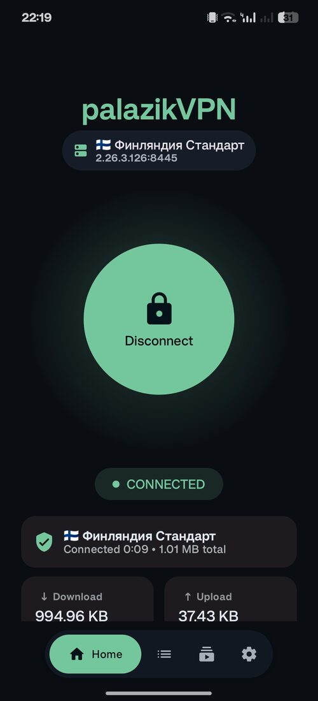
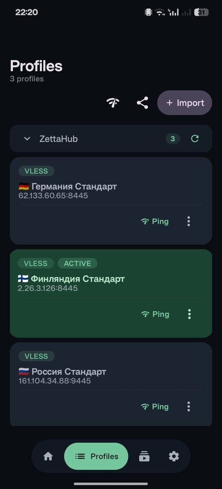
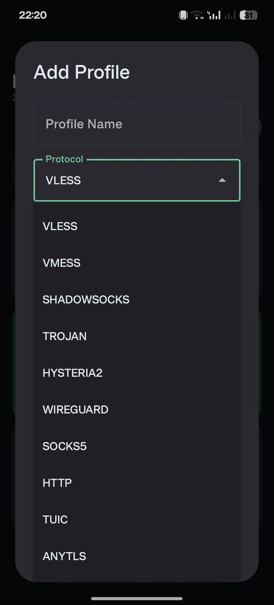
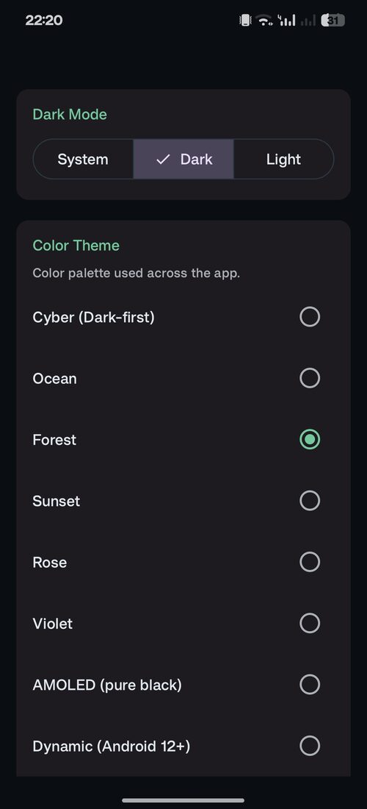

A modern Android VPN client powered by Xray/libv2ray. Import proxy profiles, manage subscriptions, and run a full-device VPN — all with a beautiful Material 3 interface.

Built with Kotlin and Jetpack Compose, palazikVPN combines powerful proxy protocol support with a clean, modern interface.
Routes all device traffic through Xray/libv2ray using Android's native VpnService API for complete network protection.
Scan QR codes from image files or camera to import profiles. Export any profile as a QR code for easy sharing.
Add and refresh subscriptions with progress tracking and partial-failure messages. Bulk refresh all at once.
Test TCP, HTTP GET, and HTTP HEAD latency for any profile to find the fastest server for your location.
Two design systems and eight color themes — Cyber, Ocean, Forest, Sunset, Rose, Violet, AMOLED, and dynamic — in English or Russian.
Route specific apps around the VPN, or route only selected apps through it. Keep banking on your real IP while everything else stays protected.
Automatically reconnect to your last profile when the device boots, if VPN permission is already granted.
Override the default DNS resolver with any server of your choice for additional privacy and control.
Full-featured editor with field validation, masked secret fields, import preview, and protocol-specific options.
Generate a free Cloudflare WARP profile in a single tap — connect instantly with no server of your own.
Per-profile TLS fragmentation splits the handshake to slip past deep packet inspection on censored networks.
Routing presets, selectable domain strategy, FakeDNS, ad blocking, China bypass, and custom direct/blocked domain lists.
Block all traffic until the tunnel is ready, with IPv6 leak protection always on for true full-device privacy.
Toggle the VPN from a Quick Settings tile or a home-screen widget that shows your live connection state.
Check GitHub releases from inside the app and get prompted when a newer signed build is available.
Import profiles from any major proxy protocol. palazikVPN decodes, validates, and previews them before connecting.
Real screens from the Android app — Material 3 Expressive, eight color themes, and smooth motion throughout.



Every library chosen for reliability, performance, and developer experience.
palazikVPN requests the minimum permissions required to function, with clear explanations for each.
Download the latest signed APK from GitHub Releases, or build it yourself with a single Gradle command.
git clone https://github.com/palazik/palazikVPNgradle wrapper --gradle-version=9.4.1 && chmod +x gradlew./gradlew assembleDebug --no-daemon